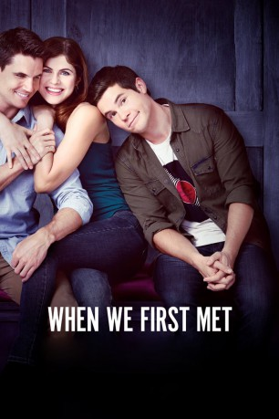
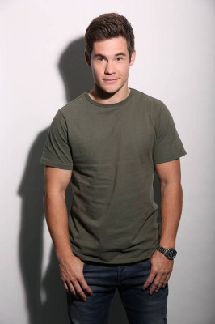
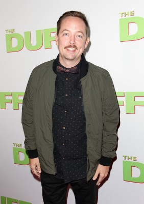

#8234 When We First Met
 
 IMDB-Wertung: 6.4 / 10
IMDB-Wertung: 6.4 / 10  Tomatometer: 43
Tomatometer: 43  Metascore: 36
Metascore: 36 
Noah spends the perfect first night with Avery, the girl of his dreams, but gets relegated to the friend zone. He spends the next three years wondering what went wrong - until he gets the unexpected chance to travel back in time and alter that night - and his fate - over and over again.
Jahr: 2018
Dauer: 97 Minuten
FSK:
Land: USA Studio: Footprint FeaturesTonspuren: DD5.1 - ,
Untertitel: Deutsch, Englisch,
Auflösung: 1080p (1920x1080) Größe: 4116 MB
Genre: Komödie
Regisseur: Ari Sandel
Drehbuch: John Whittington
Soundtrack: Eric V. Hachikian
Darsteller:
-  Adam Devine als Noah
 Alexandra Daddario als Avery
Alexandra Daddario als Avery- Shelley Hennig als Carrie
- Andrew Bachelor als Max
 Robbie Amell als Ethan
Robbie Amell als Ethan Dean J. West als Phil
Dean J. West als Phil Tony Cavalero als Angus Young
Tony Cavalero als Angus Young-  Chris Wylde als Mr. Costigan
- Daryn Kahn als Drunk Hulk
 Peter Jaymes Jr. als Chad
Peter Jaymes Jr. als Chad Noureen DeWulf als Margo
Noureen DeWulf als Margo Chelsea Bruland als Mary
Chelsea Bruland als Mary- Adam Henslee als Amos
- Tenea Intriago als Rebecca
- Kyler Porche als Trevor
- Michael Scott als Garçonne
- Talbott Lin als Mr. Chun
- Bill Rainey als Avery's Dad
- Karen Dalferes als Mother (uncredited)
- Bryan Michael Hall als Barista (uncredited)
- James Kemp als Bartender (uncredited)
- Phil Meyer als Jazz Club Patron (uncredited)
- Delfeayo Marsalis als Danny
 Martin Bats Bradford als Devon
Martin Bats Bradford als Devon- Bertha Bindewald als Marta
- Audrey Bishop als Avery's Mom
- John Garcia als Little Caesar (uncredited)
- Betsy Medina als Halloween Party Goer (uncredited)
 Ron M Patterson als Halloween Party Goer (uncredited)
Ron M Patterson als Halloween Party Goer (uncredited)- Hannah Jacole Powell-Yost als Egg (of Egg & Bacon Couple) (uncredited)
- Darrell L. Shuler als Halloween Party Goer (uncredited)
Datei: X:\2018(N-Z)\When We First Met (2018, FSK, 1920x1080).mkv seit 11.02.2018
Festplatte: HD 2018(G-Z)-2019(A-Z)
 Es gibt insgesamt 172 Filme in der Gruppe '2018(N-Z)'
Es gibt insgesamt 172 Filme in der Gruppe '2018(N-Z)'